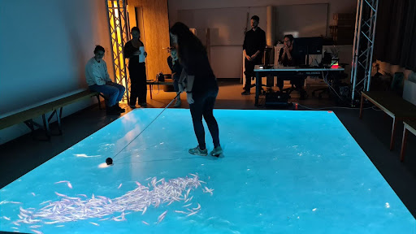
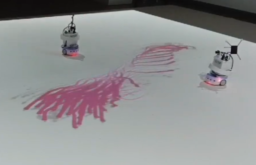
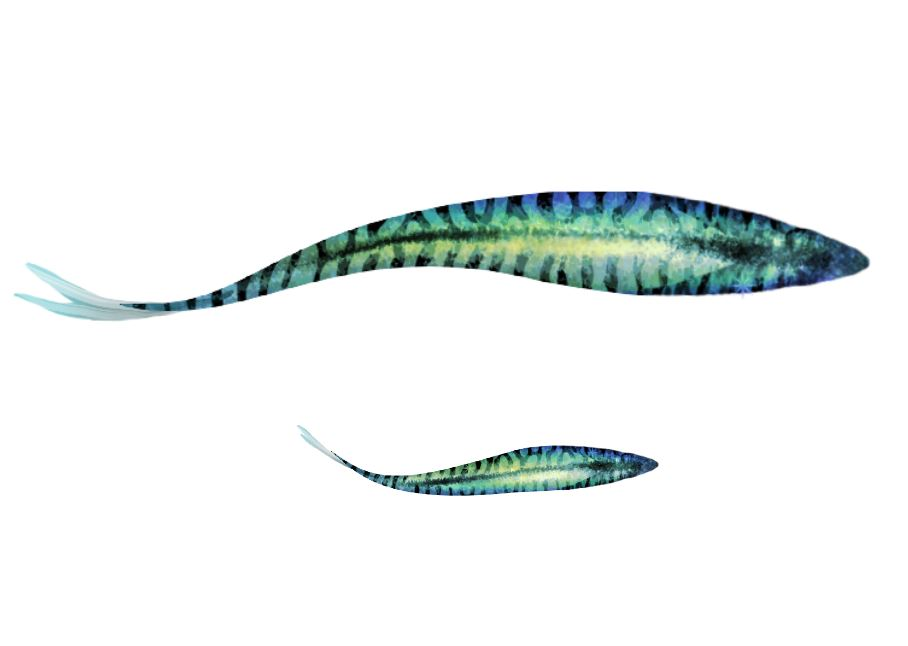

Collective Behavior Setup (CoBe)
An augmented reality for humans, robots and simulated agents
 Collective behavior is often studied in different scales and environments either through mathematical models and resulting
agent-based simulations or by observing biological agents to inspire these models and match them with real behavior.
Having synthetic collective intelligence as a motivation, the models then serve as a basis for the design of
artificial agents, such as robots, to test the validity of the model in the real world and to accomplish
useful applications. During this workflow many environmental gaps are present that
has to be bridged: from observations in the physical world to simulated agents and back to the physical world to
robot agents. CoBe is a platform that aims to help bridging these gaps by providing a common environment for humans,
simulated agents and robots to interact with in order to understand the role of embodiment in collective behavior.
Collective behavior is often studied in different scales and environments either through mathematical models and resulting
agent-based simulations or by observing biological agents to inspire these models and match them with real behavior.
Having synthetic collective intelligence as a motivation, the models then serve as a basis for the design of
artificial agents, such as robots, to test the validity of the model in the real world and to accomplish
useful applications. During this workflow many environmental gaps are present that
has to be bridged: from observations in the physical world to simulated agents and back to the physical world to
robot agents. CoBe is a platform that aims to help bridging these gaps by providing a common environment for humans,
simulated agents and robots to interact with in order to understand the role of embodiment in collective behavior.

CoBe is an augmented reality setup to connect simulated and physical worlds. It is a set of projectors and cameras
spatially distributed on a scaffold around an active arena
connected via a controller station. CoBe detects dedicated objects, adjusts the underlying simulation environment
based on their positions, and projects these changes back into the arena, creating a dynamic, interactive space.
CoBe can be flexibly modified to detect any object and run any real-time simulation defining the environment to be
projected.
In its default mode CoBe runs the computational model of Dr. Palina Bartashevich exploring predator-prey
interactions in simulated groups of fish. Accordingly CoBe projects a school of virtual fish that move within
the arena. Humans can interact with the group of prey via a special staff representing a predator for the virtual
fish, to which they react with collective escape behavior also exhibited by real fish. Thus a human or
multiple humans can act as predator(s) in the system and try to control the fish school.
 The system has been extended to support Thymio II robots. In this case robots can sense the projected fish swarm either via their cameras (decentralized) or via a central information node (centralized position coordinates). The robots then can behave in the physical world interacting with the simulated fish. By integrating robots in CoBe we have the unique possibility to bridge the gap between simulated and physical agents, and, among others, (1) to study the differences between centralized and decentralized control, (2) to quantify the effect of perceptual noise on agent behavior or (3) to explore the effect of physical constraints such as movement limitations coming from the embodiment of agents. Furthermore CoBe can also simplify experimentation with robot collectives. In our case, from the 2 different type of agents (predators and prey) we only need to physically engineer one of them keeping the problem tractable.

CoBe is also a tool of scientific outreach. The current visualization of simulated
fish was inspired by observations from the
gulf of Mexico where interactions between blue Marlins and Mackerels inspired the
underlying mathematical model. CoBe, as a scientific communicator tool uses multiple
artistic elements. Projected fish are individually animated by David James making the
fish school more dynamic. The underlying music has been specifically composed by ...
and Natalie Szende for a full audiovisual experience.

- GitHub Find the Code on GitHub